.jpg)
Miscellaneous Topics
Anomalies of the Ductus Arteriosus or Venosus:
1. Closure of the ductus arteriosus- Constriction or premature closure of the ductus arteriosus
- Most commonly caused by maternal use of indomethacin
- Stopping the drug therapy can resolve the constriction within a few days
- Leads to:
- Right ventricular hypertrophy
- Decreased right ventricular myocardium compliance
- Decreased volume of tricuspid regurgitation and pulmonary arterial flow
- Right heart failure
- Fetal hydrops
- Pulmonary vascular disease
- Causes: extrinsic agent, anti-inflammatory drugs (indomethacin - used to prevent preterm labor, ibuprofen)
- Fetal echo findings:
- Discrepancy of right and left ventricle size
- Hypertrophied and dilated RV
- Poor RV function
- At least mild tricuspid regurgitation
- High velocity, turbulent jet from the ductus arteriosus to the descending aorta
- Systolic velocity 200 - 300cm/s, high diastolic velocities too
- Complete closure of the ductus arteriosus leads to right ventricular hypoplasia, pulmonary stenosis or atresia
A case of ductal constriction due to maternal anti-inflammatory drug exposure (ibuprofen)
2. Agenesis of the ductus arteriosus- Associated with TOF/absent pulmonary valve syndrome, pulmonary artery hypoplasia, serious lung disease
- Associated with thromboembolism
- Associated with Noonan syndrome
- Dilated IVC may be noted on the scan
Interrupted IVC:
- The IVC is usually interrupted during its course through the liver
- In most cases, the azygos vein drains the abdominal IVC segment and connects to the right atrium
- The azygos vein normally originates in the abdomen and courses through the diaphragm to join the SVC
- In some cases, the hemiazygos vein has been identified connecting the abdominal IVC to the azygos vein
- The normal hemiazygos vein is a tributary of the azygos vein and makes the connection in the thoracic cavity
- 80% of cases are associated with left atrial isomerism
- Best evaluated in the sagittal view of the fetal body/chest
- Absence of the IVC but a dilated vessel identified coursing parallel and posterior to the descending aorta
- Double Vessel Sign
- Sagittal view - azygos vein parallel and posterior to the aorta with flow moving cephalad (opposite of the aorta flow)
- 4 chamber - azygos vein and aorta identified posterior to the left atrium
- If interrupted IVC is suspected, the atrial appendages should be evaluated for atrial isomerism
- If the azygos vein is dilated but a normal IVC is present, there is an issue with the ductus venosus or portal circulation
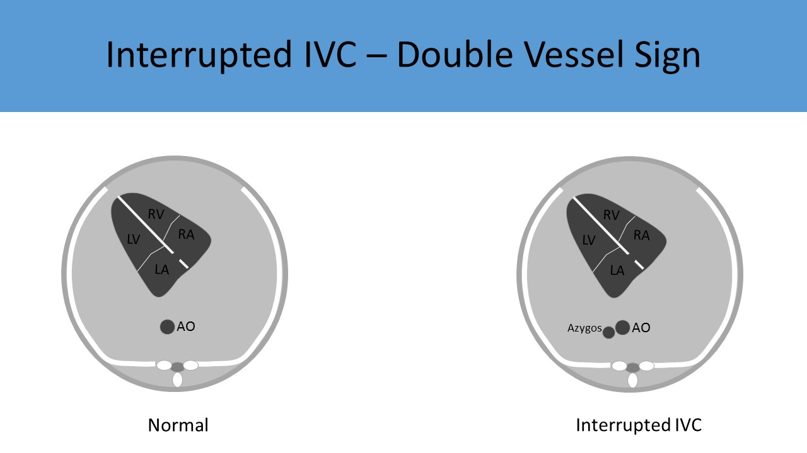 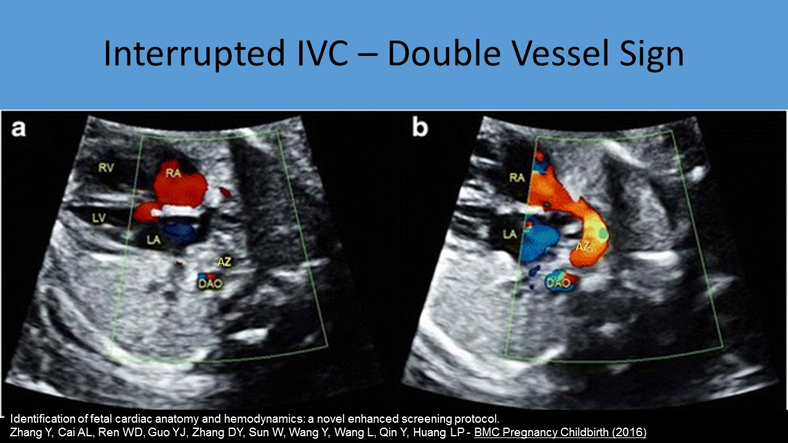
Persistent Left Superior Vena Cava:- Forms when the left anterior cardinal vein is not obliterated during normal fetal development
- Normally a single SVC enters the right atrium
- Left SVC courses lateral to the aorta to join the coronary sinus in most cases
- Best evaluated in the three vessel view
- If a 4th vessel is identified to the left of the main pulmonary artery on a three vessel view, a persistent left superior vena cava should be suspected
- VSD and coarctation are the most commonly associated defects in cases without heterotaxy
- If occurs as isolated defect, the patient will usually be asymptomatic post-natally
- A communication between the aorta and the pulmonary artery
- Associated with maternal heroin use
- Semilunar valves are present and normal in position
- The best view to evaluate this abnormality is the short axis of the aortic valve because both semilunar valves can be aligned the same plane
- Drop-out caused by the sound beam traveling parallel to a portion of the tissues separating the aorta and pulmonary artery can lead to a false positive diagnosis of APW
- Always evaluate a suspected defect from multiple angles and apply color Doppler to assess for shunt flow
- Associated with interrupted aortic arch and other arch anomalies
A CASE OF AORTOPULMONARY WINDOW-there is large communication below both semilunar valves
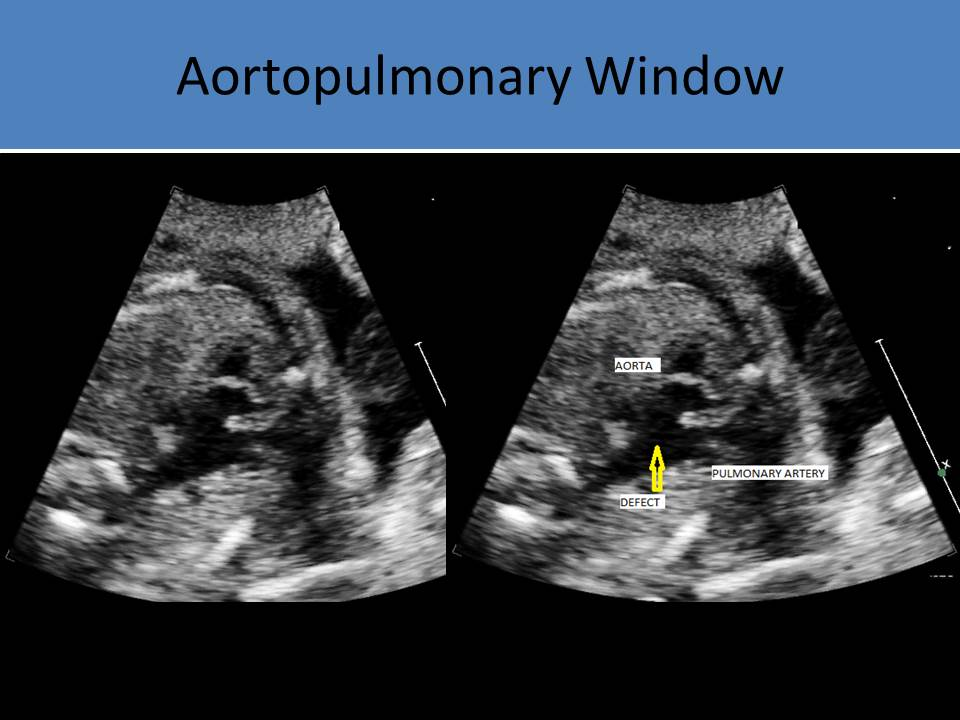
Pulmonary Sling:- Left pulmonary artery originates from the right pulmonary artery and courses posterior to the trachea and anterior to the esophagus
- Three vessel trachea view can be helpful in the diagnosis
- Single or very dominant papillary muscle or two very closely spaced papillary muscles
- Can cause mitral stenosis
- Membrane crosses the left atrium just inferior to the pulmonary vein junction
- Can mimic pulmonary vein stenosis and cause dilated pulmonary veins
- Much less commonly occurs in right atrium
- Echogenic foci within the cardiac structure
- Usually identified in the left heart
- Usually a normal variant if it is an isolated finding and will disappear in the 3rd trimester
- NOT an appropriate indication for a fetal echo
- Considered a soft marker for Down Syndrome, increased suspicion if multiple foci are present
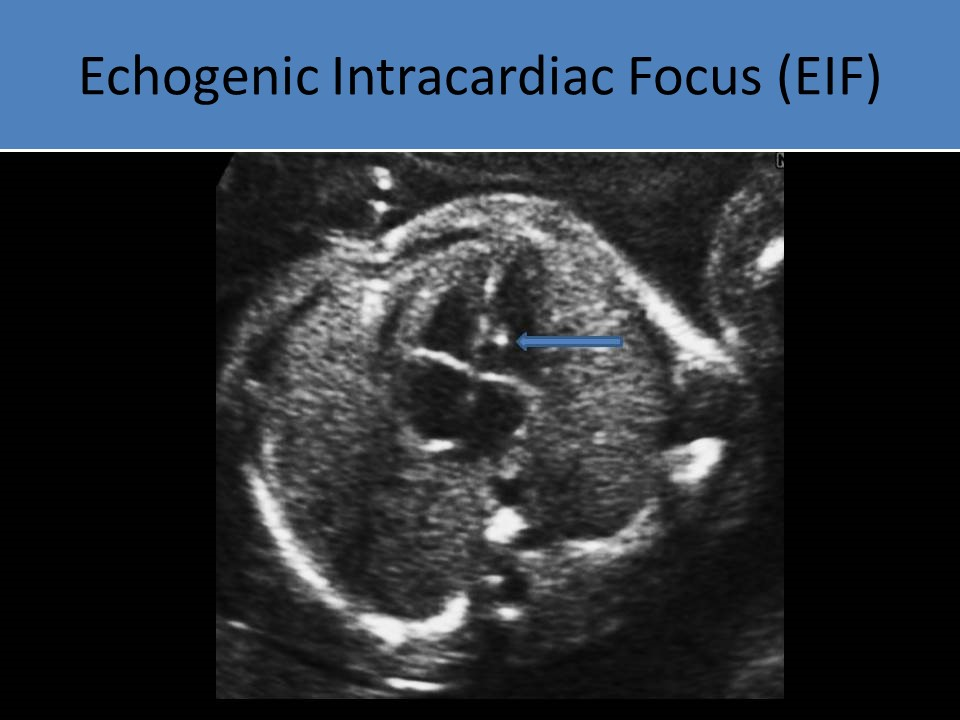
Doppler Evaluation of Other Fetal Structures:
- Useful for evaluating a fetus with suspected hypoxia and IUGR
- PW Doppler of the Middle Cerebral Artery (MCA) is most common method for diagnosing fetal anemia
- MCA evaluated with Doppler cursor parallel to flow in the vessel (0 degree angle)
- Performed in an axial view just caudal to the BPD level
- MCA should be sampled anterior to the thalamus and as close to the origin from the ICA as possible
- A small sample size of 1-2mm should be used for the Doppler tracing
- Starts out as high resistance flow in the first trimester with little to no antegrade diastolic flow (increased pulsatility index)
- Should demonstrate lower resistance flow in 2nd/3rd trimester with some antegrade diastolic flow on normal exams (decreased pulsatility index)
- Normally a higher resistance flow pattern than the umbilical artery
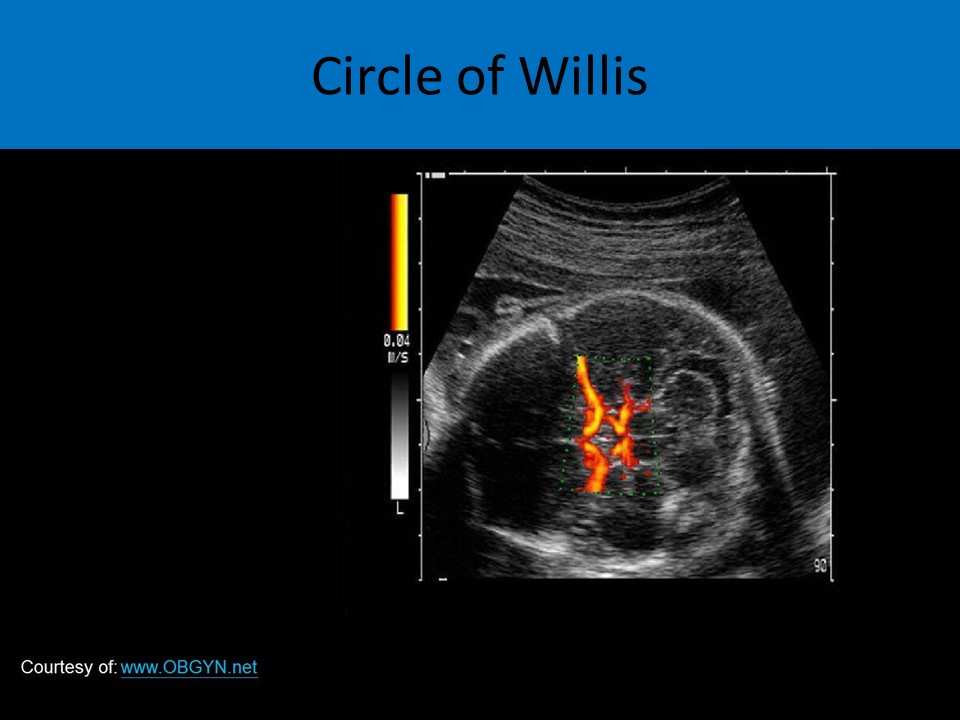 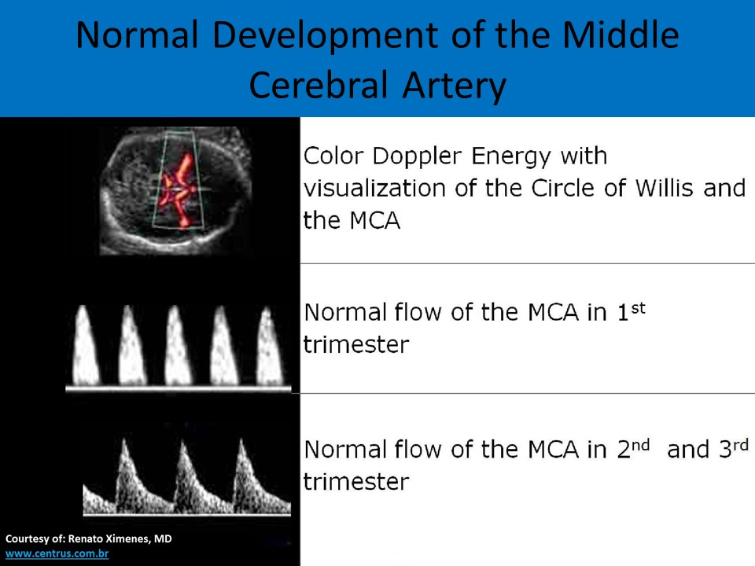
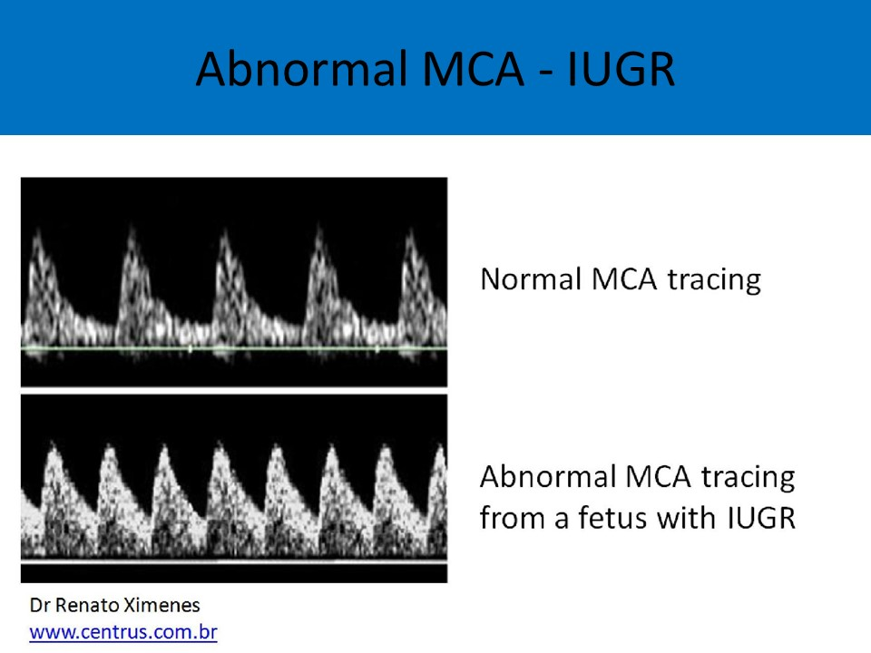 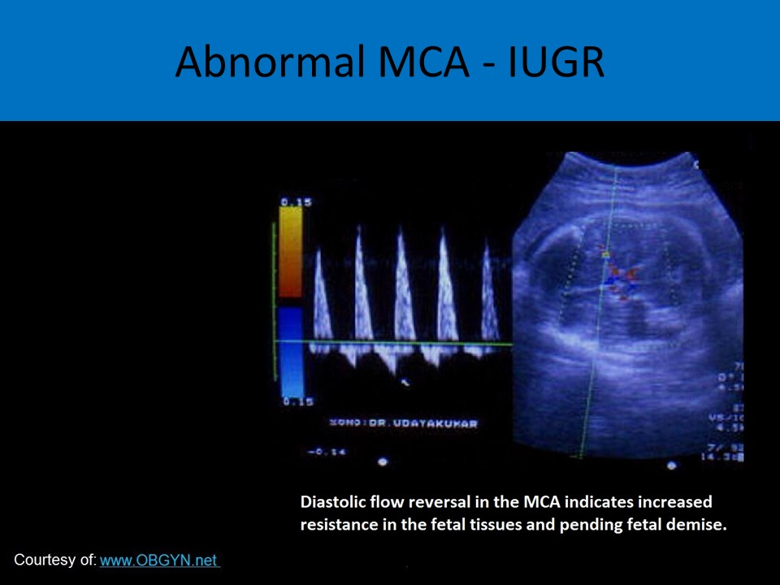
- Cord normally contains a single vein
- Evaluate a free floating portion of the cord
- Flow should be continuous and non-pulsatile throughout pregnancy
- Abnormal flow would be pulsatile or restricted
- Pulsatile flow later in pregnancy can indicate congestive heart failure in the fetus
- Umbilical vein thrombosis can be lethal to the fetus
- Cord normally contains two arteries; a single artery can be related to other fetal defects
- Can be sampled anywhere along the cord
- 3-5mm sample volume used with PW Doppler
- NO angle correction necessary because you are obtaining a ratio of velocities, not evaluating peak flow velocity
- 3-5 waveforms should be averaged for the ratio
- First trimester flow is high resistance with little to no antegrade diastolic flow
- Resistance decreases and diastolic flow increases as pregnancy progresses
- 2nd/3rd trimester normally has low resistance flow with antegrade diastolic flow
- Placental insufficiency and IUGR will cause decreased or absent diastolic flow
- The amount of antegrade diastolic flow increases as the pregnancy progresses
- Low S/D ratio and RI in 2nd/3rd trimester is normal
- Abnormal flow is high resistance with absent diastolic flow or possible diastolic flow reversal
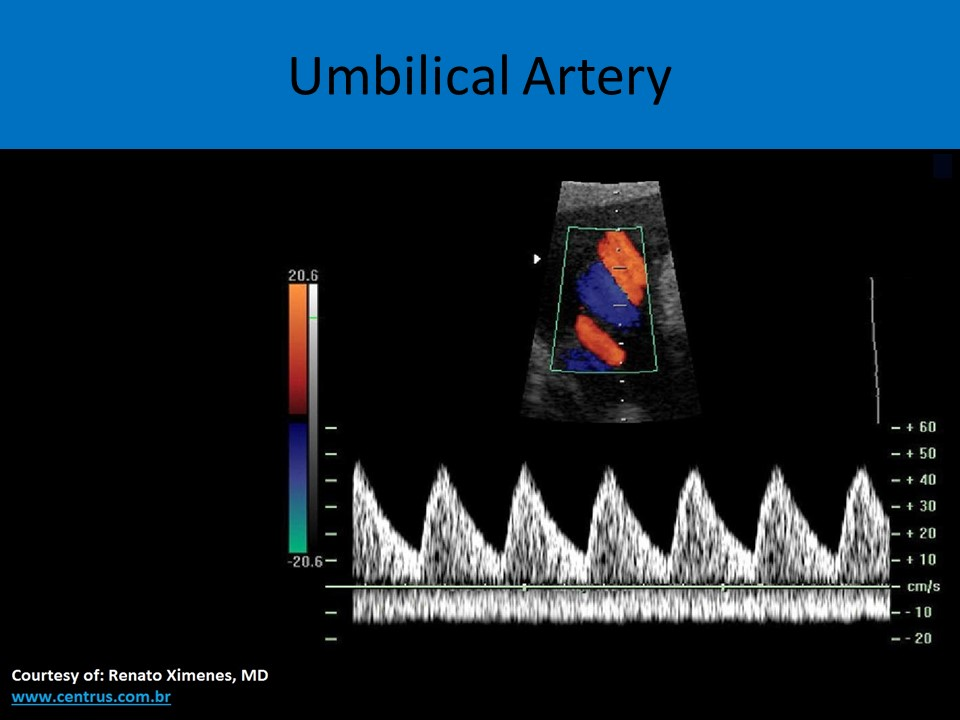 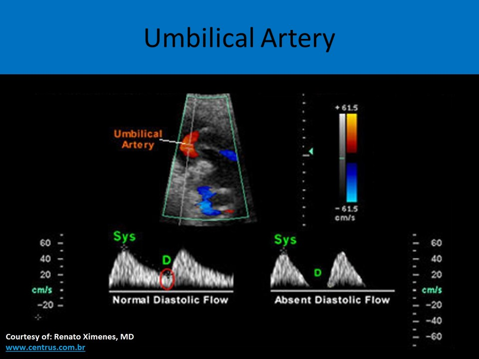
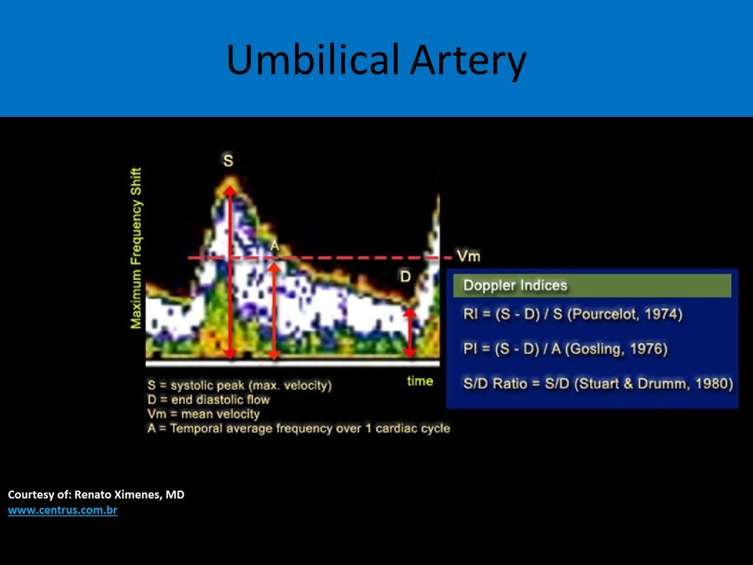 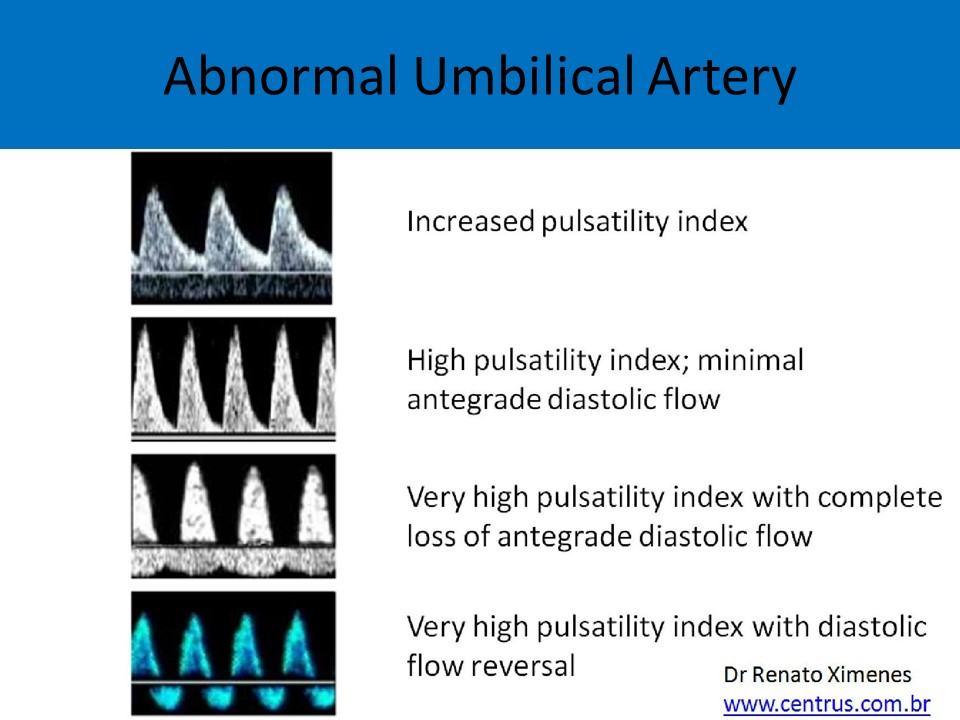
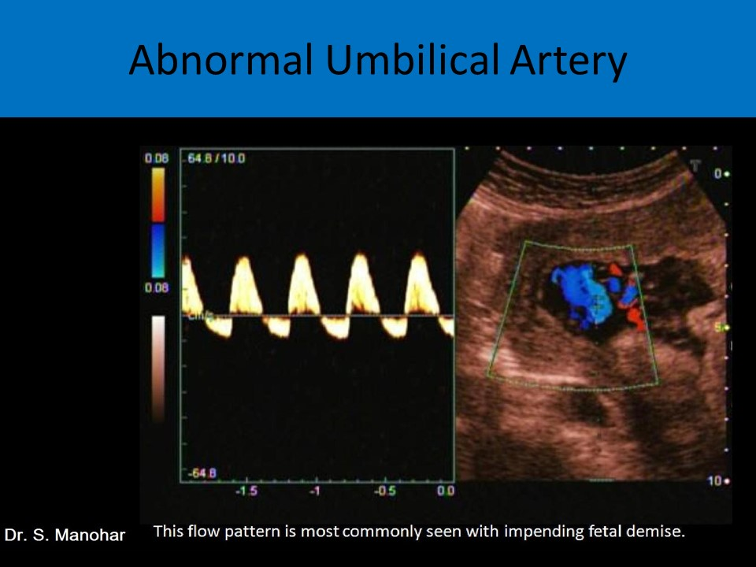
- Located adjacent to the external iliac arteries on the lateral sides of the uterus
- Evaluated bilaterally
- Best evaluated at the level of the cervix
- 1st trimester waveform demonstrates no end diastolic forward flow
- 2nd/3rd trimester waveform is lower resistance with continuous forward flow throughout the cardiac cycle
- Normally, the flow resistance progressively decreases and diastolic flow increases as pregnancy progresses to allow for increased flow volume
- Resistive index decreases with pregnancy
- Increased resistance in the uterine arteries leads to an increased risk for IUGR and pre-eclampsia
- IUGR causes increased resistance to the flow in the uterine arteries
- Early diastolic notching is a characteristic sign of increased resistance to flow in the uterine arteries
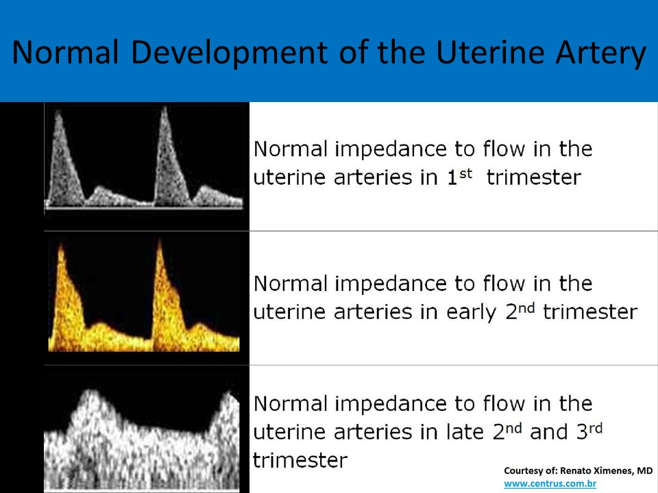 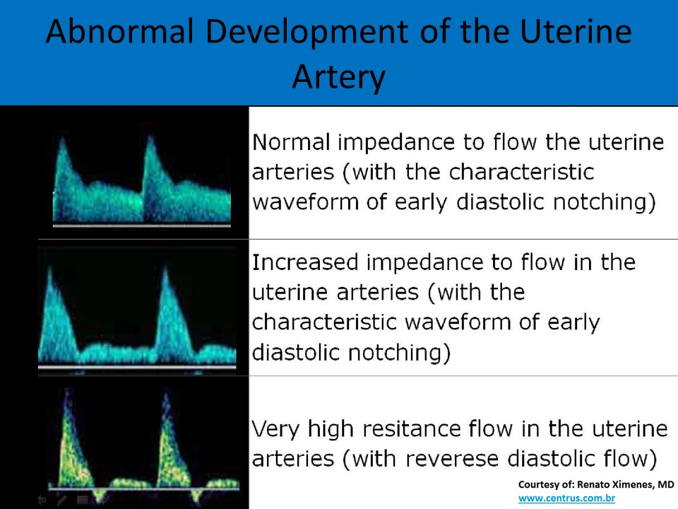
- Origin of the ductus from the umbilical vein best evaluated in a transverse oblique view of the abdomen
- Length of ductus best evaluated in the sagittal plane of the fetal abdomen
- Color Doppler can assist in differentiating the ductus from the umbilical vein, color aliasing is common in the ductus venosus due to higher velocity flow
- Samples should be taken at the origin adjacent to the umbilical vein and at the junction with the IVC near the heart
- Flow normally courses through liver to connect to IVC; most flow bypasses fetal liver
- Pulsatile venous flow that continues forward throughout the cardiac cycle; described as triphasic
- Higher velocity flow than the umbilical vein and IVC make the ductus venosus easy to identify on ultrasound
- Normal flow is triphasic and antegrade throughout the cardiac cycle
- Diastolic flow reversal is abnormal; indicates increased resistance in fetal tissues, seen with anemia and IUGR
- If diastolic flow reversal is identified in the ductus venosus in the first trimester, chromosomal anomaly should be suspected
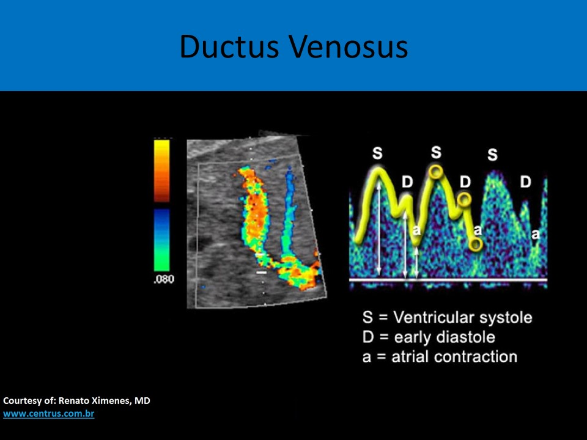 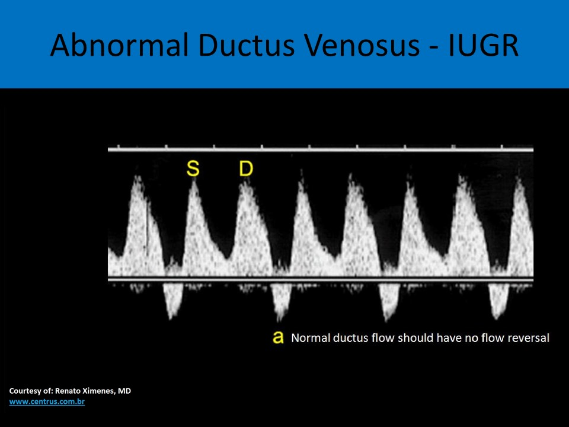
Complications That Cause Changes in the Doppler Evaluation of a Fetus:
- Increased resistance to flow in the umbilical artery causing decreased or absent diastolic flow
- Usually related to placental insufficiency
- Associated with maternal smoking, alcohol use, infection, preeclampsia/eclampsia
- Decreased PI in the middle cerebral artery
- Decline in cardiac output
- E/A ratio >1.0 on the mitral inflow tracing
- Prolonged myocardial performance index
- Increased resistance to the flow in the uterine arteries
- Increased pulsatility of ductus venosus waveforms and loss of forward flow velocity during atrial contraction
- IVC will demonstrate increased flow reversal during atrial contraction
- Can lead to a significant increase in antegrade diastolic flow in the MCA due to the head sparing effect
- Decreased resistance, S/D ratio, resistive index (RI), and pulsatility index (PI) of the MCA as vasodilation in the brain increases with the head sparing effect
- Diastolic flow reversal in the MCA is a significantly abnormal finding; indicates increased resistance in fetal tissues; seen later with IUGR and related to impending fetal death
- Associated with increased risk of IUGR, pre-eclampsia and prenatal death
- Increased resistance to flow in the umbilical arteries
- Uterine and umbilical artery flow resistance is usually normal (not helpful in diagnosis)
- PI values in the MCA and descending aorta are usually normal
- Blood flow velocities will be increased in the MCA, descending aorta and umbilical vein
- MCA peak systolic velocities obtained and compared on weekly exams; serial increase indicates anemia
- If peak velocity is >1.5 times the average velocity for a normal fetus, anemia is suspected
- Increased pulsatility and flow reversal (a wave) in the ductus venosus
- Treated with an intrauterine blood transfusion
- Increased fluid accumulation in serous cavities (pericardial, pleural effusion, abdominal ascites, skin edema) and tissues
- A fluid accumulation in at least 2 but up to 4 fluid sections
- Immune hydrops - caused by Rh incompatibility with mother, causes fetal anemia, can be treated with a fetal blood transfusion
- Non-immune hydrops - MANY different causes, usually untreatable
- Cardiac abnormalities that cause congestive heart failure and fetal hydrops:
- Ebstein anomaly
- Heterotaxy
- Absent pulmonary valve syndrome
- Premature closure of the foramen ovale
- Severe obstruction of RVOT
- SVT
- Atrial flutter
- Prolonged QT syndrome
- Rhabdomyoma
- Teratoma
- Dilated cardiomyopathy
- Non-compaction of the ventricular myocardium
- Fetal hydrops is a very critical finding- need to contact a cardiologist as soon as possible
29wk fetus with hydrops
Twin Pregnancy:
- The timing of the cell division determines the "type" of twins = Monochorionic vs. Dichorionic and Monoamniotic vs. Diamniotic (or conjoined twins)
- Monochorionic, Monoamniotic = one gestational sac, one yolk sac, one placenta, one chorion and one amniotic sac
- Monochorionic, Diamniotic = one gestational sac, one placenta, two yolk sacs, one chorion, two amniotic sacs, thin membrane between sacs
- Dichorionic, Diamniotic = two gestational sacs, two yolk sacs, two placentas (separate or fused), two chorion and two amnion with thick membrane between the sacs
- Monochorionic placentation has a higher risk of CHD
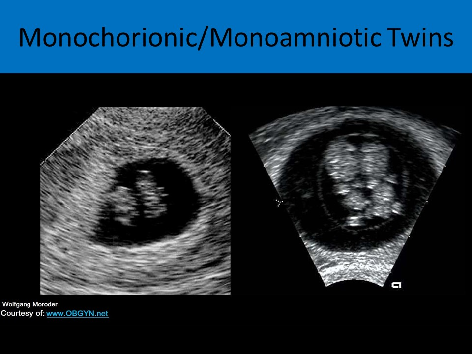
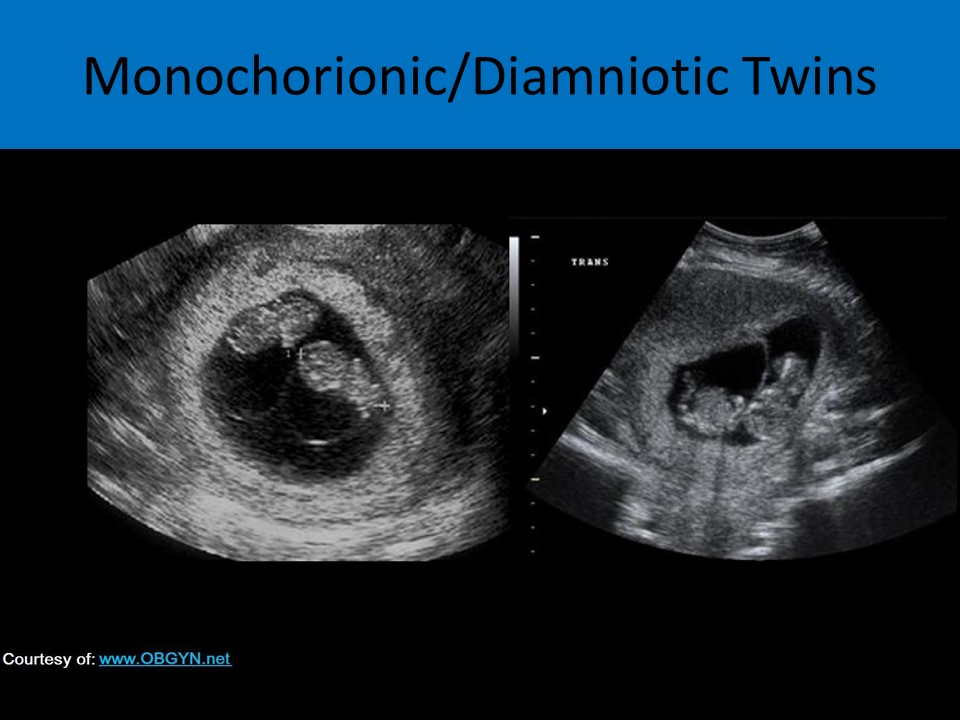 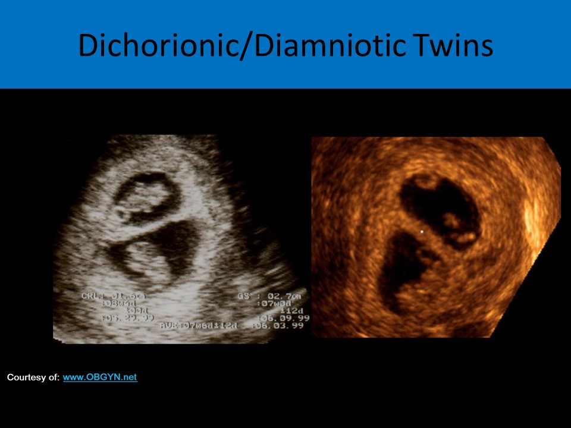
Twin to Twin Transfusion:- AKA Stuck Twin Syndrome
- Syndrome occurs in monochorionic/diamniotic twins (identical twins who share a placenta but have separate amniotic sacs)
- AV malformation within the placenta shunts blood from one twin to the other twin
- Usually occurs in fetuses of the same sex
- Causes acquired cardiac abnormalities
- VSD is the most common congenital defect seen with TTS
- Donor twin growth restricted, appears stuck to the wall due to oligohydramnios
- Recipient twin will develop hydrops and heart failure, polyhydramnios due to increased arterial inflow from the placenta
- Can be seen around 14-16 weeks and progresses to fetal hydrops and fetal demise
- The discrepancy of size: about 10%
- The recipient: large twin, polyhydramnios ( > 8cm depth of amniotic fluid), volume overload, congestive heart failure, hypertrophic cardiomyopathy, biventricular hypertrophy, associated with functional aortic and pulmonary stenosis, MR, TR
- The donor: smaller twin, oligohydramnios ( < 2cm depth of amniotic fluid), hypovolemia, absence of the bladder filling, abdominal umbilical artery flow with absent diastolic flow and umbilical vein pulsatility, hyperdynamic cardiac function, large RV, lung hypoplasia
- Treatment: laser photocoagulation of placental vascular connection
- Myocardial performance index (Tei index)
- obtains systolic and diastolic myocardial performance and measures the time interval between atrioventricular valve closure and atrioventricular valve opening and measuring the ejection time across the semilunar valve arising from the ventricle
- MPI=(ICT+IRT)/ET
- Used for TTTS and IUGR
- Normal values 0.28-0.44
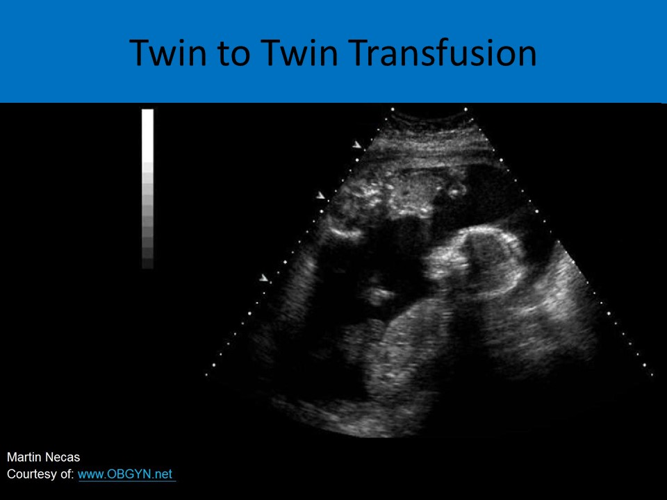 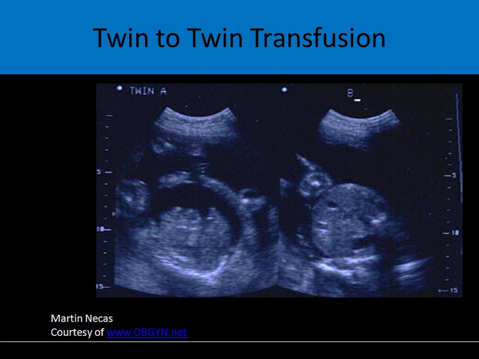
- AKA Twin Reversed Arterial Perfusion Sequence (TRAP Syndrome)
- AKA Parabiotic Twin
- Most severe form of a twin to twin transfusion
- Monochorionic/monoamniotic twins (monozygotic)
- Acardiac twin has no cardiac structure or limited structures with no motion and multiple other abnormalities
- Acardiac twin has no connection to the placenta for arterial/venous circulation
- The umbilical arteries and vein join the arteries and vein of the donor twin
- Umbilical artery to artery shunt and venous to venous shunt from "normal" donor twin
- Normal twin or "pump twin" develops heart failure due to increased load and can also develop hydrops
- Very poor prognosis for both fetuses
Conjoined Twins:
- Thoraco-omphalopagus: Two bodies fused from the upper chest to the lower chest
- Thoracopagus: Two bodies fused from the upper thorax to lower belly; the heart is always involved in these cases
- With single heart
- Type I: right and left atrium usually combined, right and left ventricle commonly fused, left ventricle is in medial location, heart cannot be separate
- Type II: heart can be separate, important to make sure the inferior vena cava is is obtained
- Omphalopagus : Two bodies fused at the lower abdomen; unlike thoracopagus, the heart is never involved in these cases
- Parasitic twins: Twins that are asymmetrically conjoined, resulting in one twin that is small, less formed
- Craniopagus: Fused skulls, but separate bodies
Conjoined twins: It is very difficult to identify the cardiac structures using fetal echo in these cases. A neonatal echo is preferred for assessing cardiac structure and function. A CT angiography exam is also recommended after the first week of life.
Conjoined twins- with color Doppler
Sacrococcygeal Teratoma:- A tumor located on the posterior fetus at the level of the sacrum and coccyx
- Neoplasm of germ layers and tissues at the region of sacrum and coccyx
- Can grow rapidly into a large structure
- Related with cardiomegaly and heart failure
- Perfusion of the sacrococcygeal teratoma ( vascular mass) increases fetal circulation volume and preload, increases myocardial mass, ventricular dilatation and atrioventricular regurgitation (heart failure)
- The inferior vena cava is dilated secondary to increase of lower body venous return
- Umbilical artery flow is important - rapid change of diastolic component of umbilical artery indicates vascular collapse
- Most common benign vascular liver tumor in infancy
- Normally occurs within first six months of life
- Usually presents with cardiac failure early in life due to the AV malformation within the tumor
- Spontaneously regresses in most patient before age 2
- Abnormal development of cerebrovascular circulation
- Most common type: the vein of Galen aneurysmal malformation (VGAM)
- Fetal echo findings: cardiomegaly, dilated superior vena cava, dilated RV with decreased systolic function, TR, dilated neck vessels, reversal of flow in the aortic arch/isthmus without aortic regurgitation, absent or decreased diastolic flow in the umbilical artery
- Gastroschisis
- Fetal bowel (and possibly other abdominal organs) protrudes through an opening in the ventral abdominal wall and is floating in the amniotic fluid
- Much less commonly associated with CHD
- Not considered an indication for a fetal echo unless other defects associated with CHD are present
- Omphalocele
- Fetal bowel (and possibly other abdominal organs) protrude through an opening in the ventral abdominal wall into the base of the umbilical cord
- The herniated contents are covered by membrane of tissue
- More commonly associated with CHD than gastroschisis
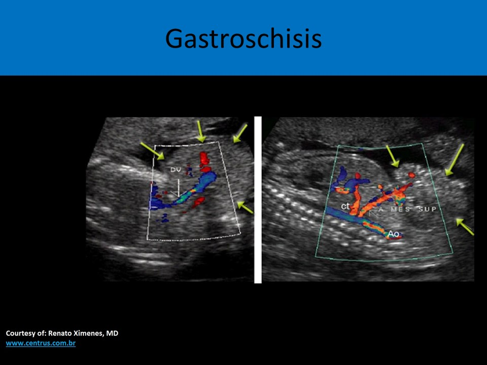 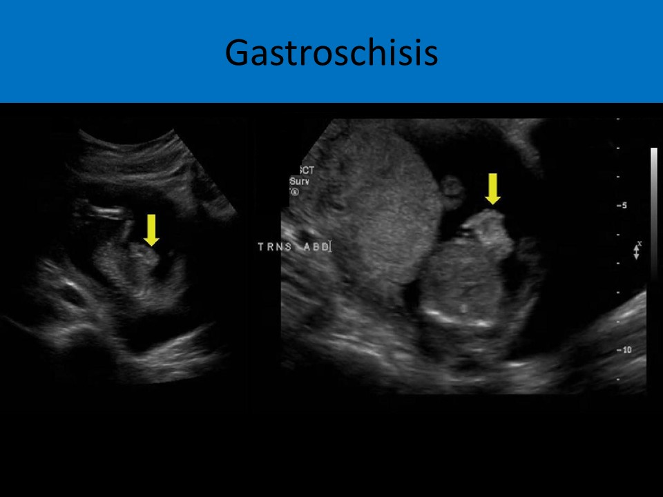
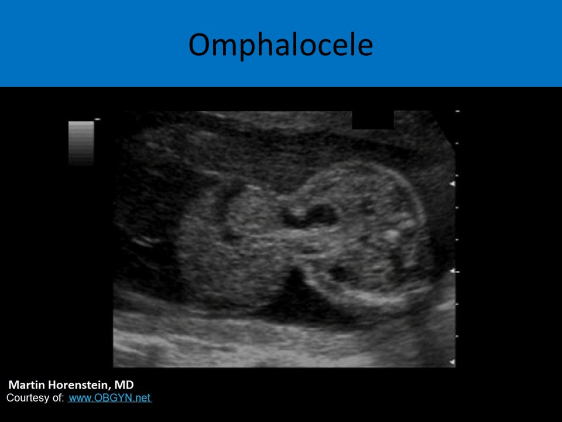
Prenatal Intervention for Congenital Heart Disease:- Requires patient counseling and signed informed consent form
- Usually performed after 22 weeks
- As the pregnancy progresses, the risk of complications decreases but the benefit of the procedure decreases
- Aortic stenosis is the most common abnormality treated prenatally
- Percutaneous approach:
- Most common method used
- Ultrasound is used to document fetal position prior to the procedure and provide guidance for the procedure
- A catheter is inserted over a guidewire through an incision in the maternal abdomen/uterus
- Transuterine approach:
- Requires general anesthesia
- Laparotomy performed to access the uterine wall
- Fetal surgical approach:
- Uterus is opened to expose the fetus
- Carries the highest risk of complications
- Ballooning of the Aortic Valve:
- Performed to allow the left ventricle to recover from pressure overload and grow normally in cases of aortic atresia
- Catheter inserted through the ventricular apex to reach the aortic valve
- Ballooning of the Pulmonic Valve:
- Performed to allow the right ventricle to recover from pressure overload and grow normally in cases of pulmonary atresia with an intact ventricular septum
- Opening the Atrial Septum:
- Performed to decompress the left atrium to allow normal pulmonary venous development in cases of HLHS
- Catheter inserted through the right atrium to reach the atrial septum
- Maternal complications - reaction to anesthesia, pain, issues with wound healing
- Fetal complications - fetal bradycardia(#1), pericardial effusion